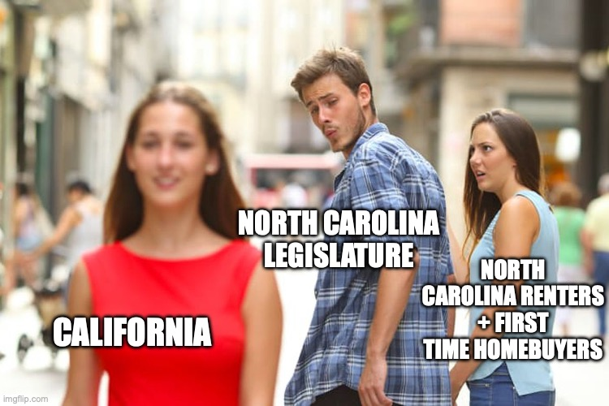
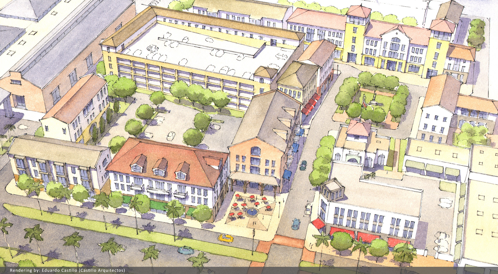

Asheville For All Endorses a “NO” Vote in November on the Property Tax Ballot Referendum
June 2, 2026
Asheville For All endorsed three city council candidates this spring. And we will be endorsing a candidate for Asheville mayor soon. (Stay tuned!)
In addition to endorsing candidates for local office, Asheville For All will be asking voters to reject the statewide property tax ballot referendum this November.
Here’s the text that will be added to the North Carolina constitution if the ballot vote passes:
The General Assembly shall enact general laws limiting the amount by which the levy of taxes on property may increase, which may include exceptions.
It may not be clear why this is a housing issue. So here’s why it absolutely is one.
Don’t “Californize” North Carolina
California is a great place to visit, but living there with its property tax situation is an absolute mess. This ballot referendum would open the door to making North Carolina’s rules around property taxes more like those of California.
The language on the ballot in North Carolina is vague, but it says that the state legislature would gain the power to limit property tax increases in the future. Note that it’s not about limiting property taxes per se, and this is what makes us think that the North Carolina legislature is eyeing what’s been done in California.
There, famously in 1978, a reactionary activist named Howard Jarvis convinced California homeowners weary from supply-shock inflation that cutting property taxes would solve their problems. He blamed inflation on the state’s spending on poor and urban schools. And the result is that not only were property tax rates generally capped, but future property tax increases were effectively blocked by preventing home valuations for tax purposes from increasing greater than two percent each year.
Over the last few decades, this has resulted in a state that can’t depend on property taxes to fund public schools and other basic services. As a consequence, cities and counties there (and in other states that have suffered similar “tax revolts”) are more likely to raise money with regressive taxes and fees that exacerbate inequality and hurt working families—especially renters.
What Does This Have to Do with Housing?
Home valuations, and subsequent property tax collections, are in one sense a way that the economy sends out messages, or “signals.”
These days, if your home valuation has gone up, it’s likely not because you built an addition to your home, but because your land has become more desirable. (Location, location, location!) Your reassessment is telling you that you have something really valuable. It might also be trying to nudge you to do something with that land. Imagine if you owned a bunch of vacant land in North Asheville. A higher tax bill might get you to try to put some rental homes on that land in order to counter higher holding costs, rather than just allowing your private property to sit unused.
The problem with California-style limits on property valuations and/or caps on property taxes is that this results in what economists call market signal “distortion.” In other words, the wrong signals end up getting sent. When property taxes are artificially low, homeowners get this message instead: “it costs me very little to hoard this land.”
This is why California has one of the worst housing crises in the nation, and why North Carolina could go in that direction too. In her seminal 2014 essay on California’s housing shortage, Kim-Mai Cutler noted that privileging homeowners in the way that California did created a two-tiered citizenry that aligned the interests of property owners against those without property wealth, and “undermined political will for building homes.” More recently, the research director at California YIMBY has made a similar case, arguing that California-style property taxes make “housing scarcity . . . an unalloyed good for incumbent homeowners.”

Won’t A Reduction in Property Taxes Help Renters?
One of the myths that Howard Jarvis spread in the late 1970s was that higher property taxes equals higher rents. He claimed that if Californians would only strangle the state’s ability to tax homeowners, relief would trickle down to renters.
This has been generally proven wrong. (A rare edge case might be in places where there is an opposite of a housing shortage, such as Detroit.) In any location that is desirable, prices are set by supply and demand. In other words, when competition is limited and scarcity reigns, there is a margin between a landlord’s costs and their revenues. Rents go up in a housing crisis because landlords can pocket a greater margin—they know that someone will rent from them anyways. It’s not because their costs are increasing.
Won’t a Reduction in Property Taxes Help First-Time Homebuyers?
When searching for a home to buy, families have to consider all associated costs. If property taxes go up, won’t that make home ownership more out of reach for cash-strapped first-time homebuyers?
The surprising answer is no. Here’s why.
First, property taxes are a holding cost. They discourage real estate speculation and the hoarding of land.
Consider the case of Hawaii. That state has the distinction of having the lowest effective property taxes in the country. It’s not a coincidence that the population there is shrinking, as it faces a housing crisis. When property taxes are so low, “it turns real estate into the perfect speculative financial asset in which to park money,” as Lars Doucet puts it. Because the cost of holding land is so cheap, eleven percent of private land in Hawaii is owned by just thirty-seven billionaires like Larry Ellison and Mark Zuckerberg.
Much closer to home, in Asheville we consistently decry the way that the Ingles Markets corporation has bought up property around the city and is sitting on much of it. We tend to stop short of considering mechanisms by which we might stop this from happening, though. Clearly, one way to get someone to do something with their property is to raise the cost of hanging onto it.
Now imagine if some homes were built on all of that underused property? Higher taxes would lead to more productive land use, and in turn, greater supply and lower shelter costs.

Second, property taxes are said to act like a “forced mortgage.” That sounds bad, but it’s not. Here’s how Arpit Gupta explains it:
Higher property taxes tend to lower the upfront purchase price of homes through capitalization. Essentially, future tax obligations get priced in to the current home value.
In other words, in a place with higher property taxes, homes are worth less, all other things being equal. (After all, those billionaires are going to want to stay away if you have higher property taxes!) That means a lower down payment.
Higher property taxes might mean that monthly costs might not be much lower as you would expect, given a lower home price. (You’re paying less to the bank to pay off the loan, but more to your escrow account.) But overall, multiple studies seem to confirm a net benefit to first-time homebuyers.
What About Property Tax Relief for Current Homeowners on Fixed Incomes?
Property wealth is wealth, illiquid as it is. But we acknowledge that homes exist in a fuzzy space in peoples’ minds—as both a valuable asset and a sentimental, priceless artifact. Still, there must be a balance between keeping retirees in their homes and nudging empty-nesters to make better use of their half-acre parcels.
In fact, there already is a balance. North Carolina has well-established and targeted programs to provide relief for homeowners on a fixed income. And there are private solutions for homeowners to access and leverage their property wealth too. Those can include home equity loans or mortgages, but they can also include solutions such as building a backyard accessory dwelling unit (ADU). That’s a win-win for homeowners and renters too.
Artificially lowering property taxes harms the public while dividing those with property wealth from those without. It’s effectively a transfer of wealth from the young to the old. On the other hand, combining reasonable property tax policy with a robust pro-infill-housing agenda is the best way to fund our public budgets and reduce housing inequality at the same time.
Please VOTE NO on the property tax ballot question this November!